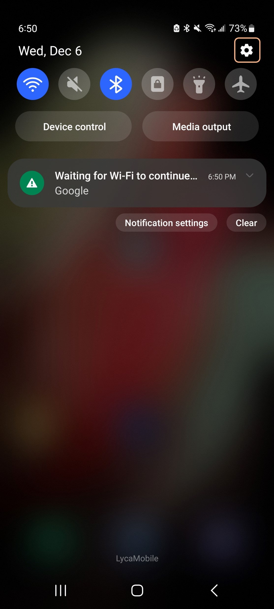
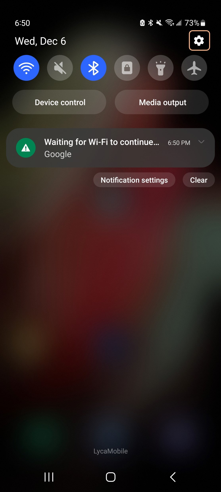
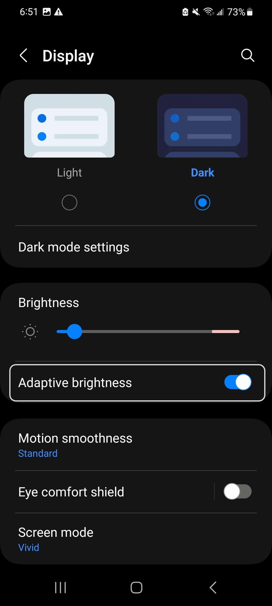
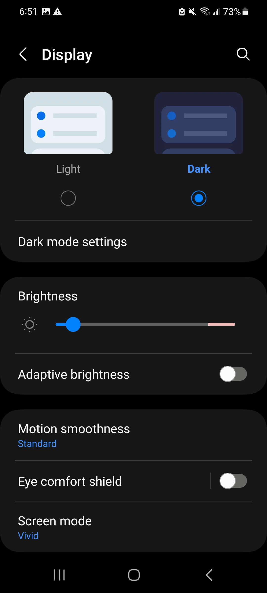
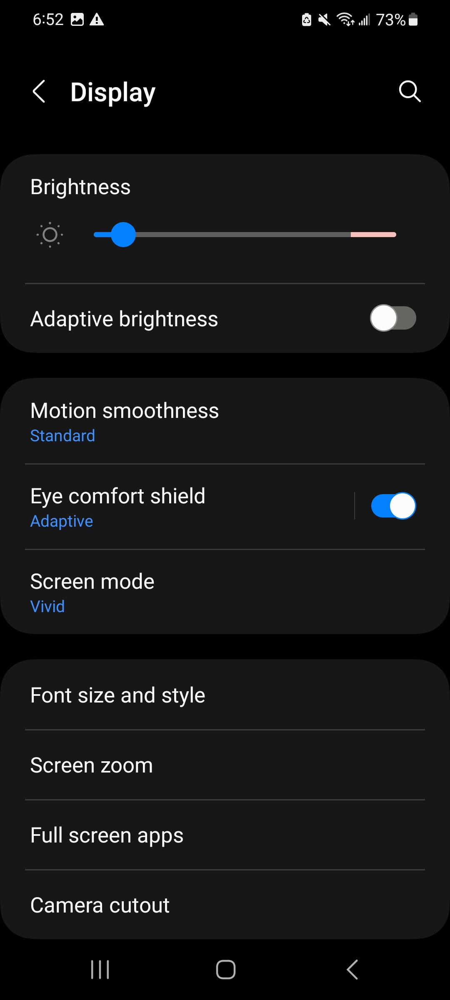
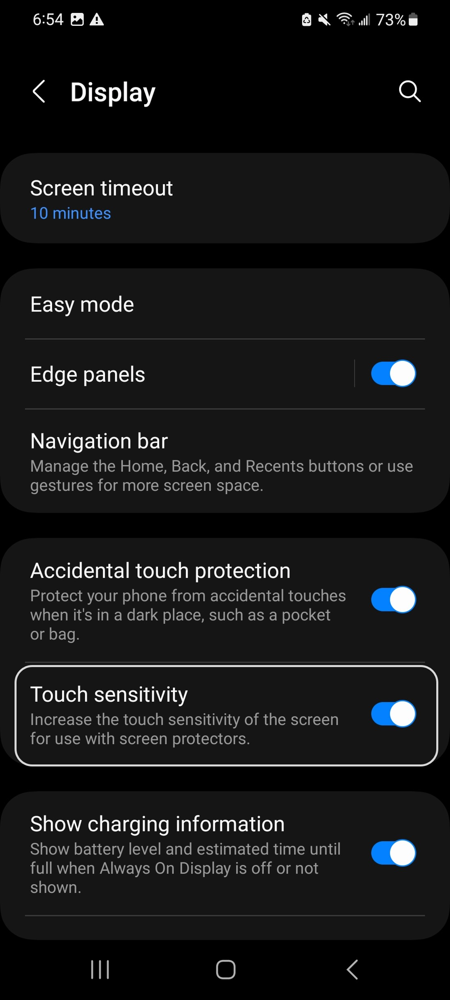
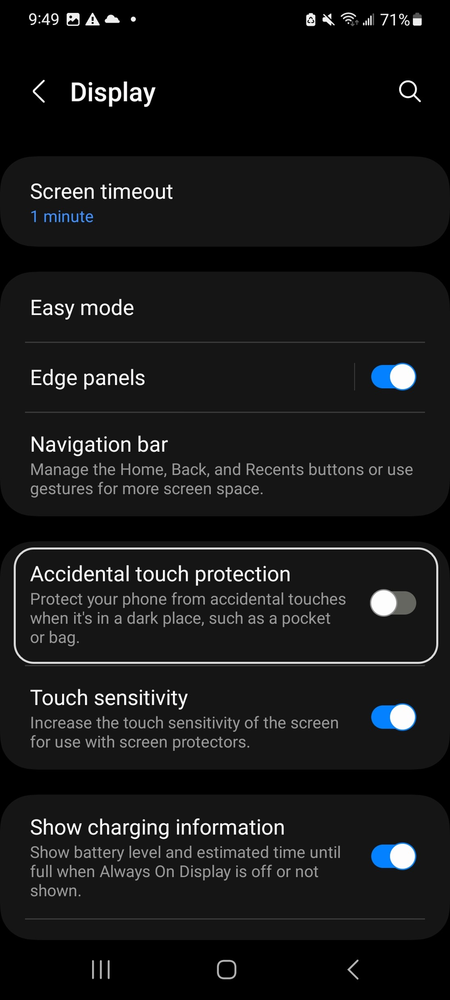
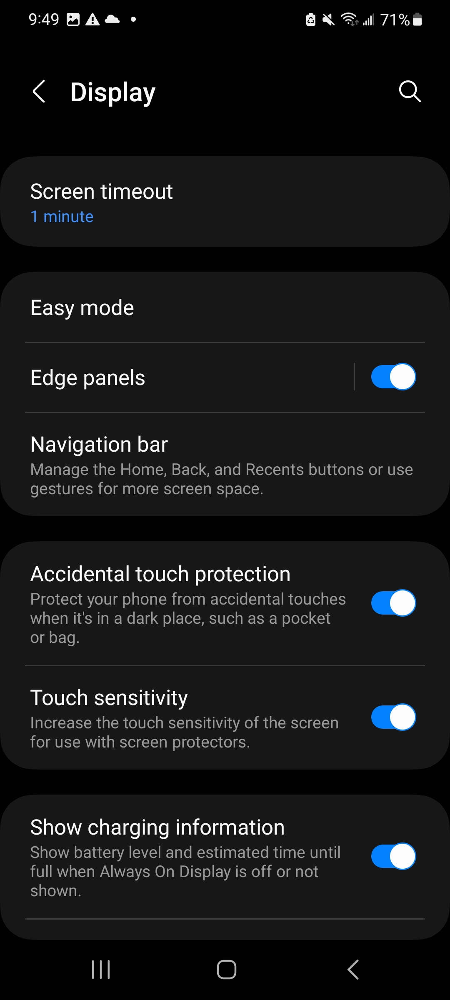
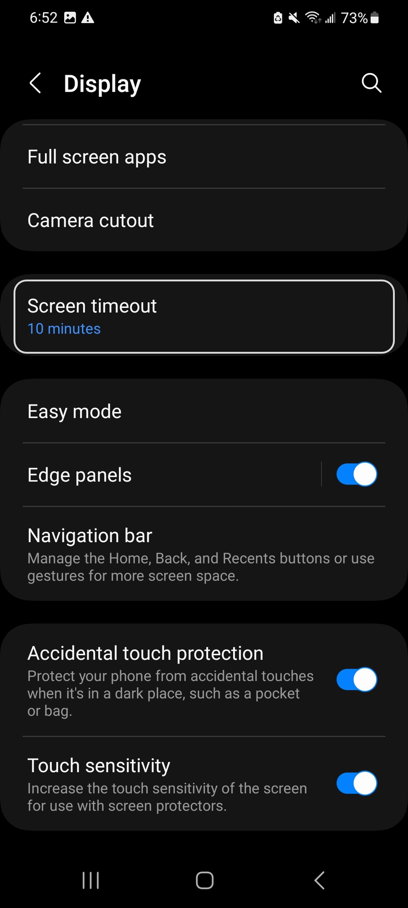
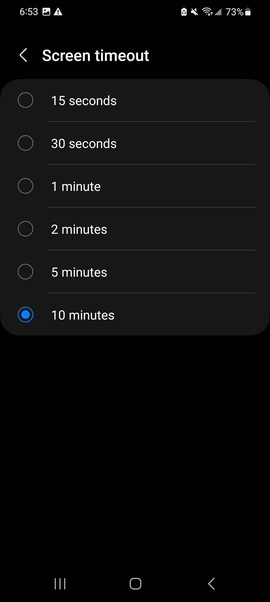

Helpful Display Settings#
Have you ever wondered :
Why does my screen brightness change wildly in different lighting condition?
How to make using smartphones less straining on my eyes?
How to stop accidental touches when using my smartphone?
Why is my fingerprint scanner not working properly after installing a screen protector?
Well, then this tutorial is for you! In this tutorial, we will go over some useful display settings on your smartphone that can make your user experience just a little better.
Switching Between Light and Dark Mode#
First, go to the Settings menu by either clicking on the gear icon or scrolling down on your home screen and clicking on the top right hand corner.
 

After opening settings, scroll down until you find ‘Display’ and click on it.


Now, at the top of this page, you will see the option to switch between dark and light mode. Currently we are in dark mode. Below you can see how the user interface looks with dark vs. light mode.

Adaptive Brightness#
The idea behind adaptive brightness is simple. If this feature is enabled, then your phone will increase the screen brightness when you are out in the sun so that it’s easy to read the screen content. Similarly, in dark environment, the phone will dim the brightness so that it’s less straining on your eyes.
Although adaptive brightness sounds great, in reality, the feature doesn’t always work perfectly. Sometimes it will increase to full brightness in complete dark and sometimes it might dim the screen at sunlight. Not to mention, each person is comfortable using their phone at different brightness level. As a result, the phone automatically changing the screen brightness can get annoying at times. Thankfully, disabling adaptive brightness is pretty simple.
By going to the Settings menu and then clicking on the Display section as shown above, you will the see the ‘Adaptive Brightness’ tab. Most of the time, this feature is enabled by default. To disable it, just click on the blue toggle to the right. When it’s disabled, the toggle will become grey colored.
 Touch Sensitivity#
Many newly released smartphones have in-display fingerprint scanner, which means instead of the fingerprint scanner being at the behind or to the side of the phone, it is underneath the display. However, these sensors sometimes doesn’t work properly after installing screen protector. Aside from the fingerprint scanner, sometimes the touch on the phone doesn’t register when using a screen protector. You can avoid this problem in just a few clicks.
By going to the Settings menu and then clicking on the Display tab as shown in the ‘Switching Between Light and Dark Mode’ section above, you will land on the page shown to the left. Scroll down to see the ‘Touch Sensitivity’ Option.
 In the image above, touch sensitivity is already enabled because we have screen protector on our phone. However, if the toggle is grey colored on your phone and you do have a screen protector, we recommend enabling this feature.
Accidental Touch Protection#
Just above the ‘Touch Sensitivity’ tab, you will also see the ‘Accidental Touch Protection’ option. In the image above, the feature is already enabled and we recommend you to do the same.
But what exactly is this feature? Modern smartphones have quite large screen, and so, while using the phone, you might get an accidental touch from your palm and that might open something else than you intended too. Moreover, you might get accidental touch while putting your phone in your pocket. Enabling accidental touch protection ignores these accidental touches, making your user experience just a little better.
Enabling accidental touch protection is quite simple. If you go to the display settings and scroll down, you will see the ‘Accidental Touch Protection’ feature. If the toggle to the right of it is grey, that means it’s disabled. Just click on that toggle to enable this feature.
 Screen Timeout#
Have you ever wondered:
Why does my phone screen goes off as soon as I leave it on the table?
Why does my phone screen stays on for a while if I just leave it unlocked?
If you have experienced either of those two problems, this part of the tutorial is for you! You can adjust the screen timeout period on your phone to set after how long the phone should lock itself if you accidentally leave the screen on.
To adjust this time, first go to the display settings on your phone by following the first four images shown in the ‘Switching Between Light and Dark Mode’ section. Now scroll down on this page and you will see the ‘Screen Timeout’ option.
If you click on it, you see the different options you have for your screen timeout period. Click the one that you are most comfortable with.
Congratulations! Now you know about all the helpful display related settings on your phone. Feel free to explore the settings menu on your phone to discover more interesting features.